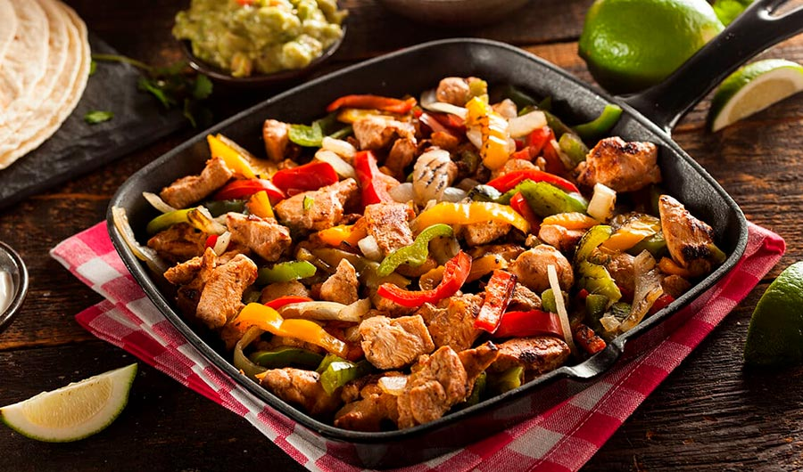

Chicken Fajitas

Chicken strips sautéed with bell peppers and onion, seasoned with cumin and spices for a classic and customizable Mexican dish. Serve in warm tortillas for a fun and tasty meal.
Ingredients:
- 2 chicken breasts, cut into strips
- 1 red bell pepper, cut into strips
- 1 green bell pepper, cut into strips
- 1 onion, cut into strips
- 2 tablespoons of olive oil
- 1 teaspoon of cumin
- Salt and pepper to taste
- Tortillas for serving
Instructions:
- Heat the oil in a large skillet over medium-high heat.
- Add the chicken strips and cook until browned.
- Add the bell peppers and onion, seasoning with cumin, salt, and pepper. Cook for a few minutes until the vegetables are tender.
- Serve in warm tortillas.
Home